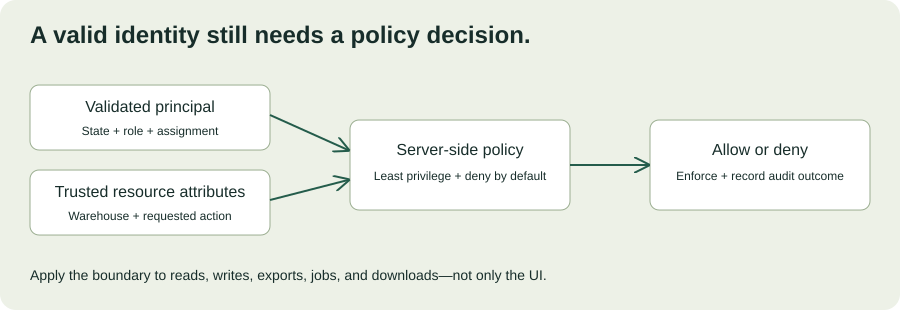

MODULE 04 · ADVANCED FIELD ENGINEERING
Harbor’s identity team has resolved the scope regression from Chapter 17. Now the security reviewer asks a broader question: “How do we know that a signed-in coordinator can only access the records and actions they should?” A working login and an encrypted connection are useful controls, but neither answers that authorization question.
This chapter turns security requirements into explicit policy, data-flow decisions, and review evidence. Harbor and the examples are fictional. The authorization lab is a local teaching model, not a production policy engine or a security certification.
Learning objectives
- Distinguish identity, authentication, authorization, and audit.
- Define permissions for users, services, records, and actions.
- Trace sensitive data through storage, exports, logs, and support workflows.
- Plan credential lifecycle and access revocation.
- Prepare a security review with concrete positive and negative tests.
Allow 100–130 minutes including practice. Prerequisites: Chapters 12, 13, and 17. Produce an access matrix, data-flow inventory, and security evidence packet.
18.1 Four questions that must stay separate
| Concern | Question | Harbor example |
|---|---|---|
| Identity | Which principal is this? | A coordinator or an ingestion service. |
| Authentication | How was the claimed identity established? | An approved identity-provider flow or workload credential. |
| Authorization | May this principal perform this action on this resource now? | Read a particular warehouse’s exception evidence. |
| Audit | Can an authorized reviewer reconstruct relevant actions? | Actor, target, action, outcome, and time recorded with controlled access. |
A valid session does not grant access to every record. An API scope may permit a class of operation while a record-level policy still restricts the warehouse. An audit event records a decision; it does not make an incorrect decision safe.
Write requirements in terms of principals, actions, resources, and context. “Enterprise-grade security” is not a testable acceptance criterion. “A Warehouse A coordinator cannot retrieve or export Warehouse B records” is much closer.
18.2 Integrate with the customer’s identity model
Use the customer’s approved identity architecture and supported libraries rather than implementing a login protocol from scratch. OpenID Connect adds an identity layer on OAuth 2.0; its identity assertions serve a different purpose from an API’s access authorization. How OpenID Connect Works ↗
For the chosen flow, validate tokens according to the provider and library requirements, including issuer, intended audience, signature or introspection rules, expiry, and flow-specific protections. Do not treat merely decoding a token as validating it. Do not assume an ID token is a substitute for the access token expected by a resource server.
Agree on the source of warehouse membership and roles, how changes propagate, and what happens when a user leaves or changes teams. A signed token may contain old permissions until it expires; session lifetime, revocation, and authorization-cache behavior need an explicit design. “We use SSO” does not resolve these lifecycle questions.
18.3 Start with an access matrix
Describe the smallest set of operations each principal needs. Roles can organize capabilities, while attributes such as warehouse assignment constrain which records are in scope. Deny unrecognized roles, actions, or missing policy context by default. Validate access on every relevant server-side path. OWASP Authorization Cheat Sheet ↗
| Principal | Allowed actions in this exercise | Resource boundary |
|---|---|---|
| Coordinator | Read evidence; record a review. | Assigned warehouse only. |
| Auditor | Read evidence; export approved audit data. | Assigned warehouse only. |
| Ingestion service | Ingest source evidence. | Assigned warehouse only; no review or export. |
This is an illustrative policy, not a universal organizational role model. There is no implied all-access administrator. If Harbor needs cross-warehouse auditors or emergency access, define a separate authorized policy with scope, expiry, oversight, and audit requirements.

18.4 Interactive authorization lab
Evaluate the matrix above. All four conditions must hold: the principal is active and authenticated, the role permits the action, the warehouse assignment matches the resource, and the policy context is recognized. Changing a dropdown only changes this simulation; no real account or permission is modified.
Would this request be permitted?
Try these cases: a coordinator reads their warehouse; the same coordinator requests another warehouse; an auditor records a review; an ingestion service exports data; an inactive principal reads evidence. Explain which condition denies each request instead of memorizing an allow/deny label.
A browser simulation cannot enforce production access. The real enforcement point must use validated identity and trusted resource attributes on the server. Apply equivalent policy to detail views, list queries, exports, background jobs, and direct object-storage access where relevant.
18.5 Follow the data beyond the main database
Inventory the fields collected, their purpose, source, destinations, owners, retention, and deletion behavior. Include caches, queues, backups, logs, search indexes, downloaded exports, and support attachments. A deletion in the primary table may leave other copies subject to a different retention process.
Minimize collection before choosing encryption settings. If a pilot only needs shipment identifiers, timestamps, and exception categories, do not copy unrelated personal details simply because the source API returns them. Preserve enough evidence for the workflow while documenting what is intentionally excluded.
Data-flow inventory exercise
Trace one evidence record from the OMS to the reviewer and then through an export or support investigation. Identify each copy, who can access it, how long it remains, and how deletion or correction propagates. Use fictional field names here.
Encryption in transit and at rest addresses specific threats, but does not stop an overprivileged application from reading data it is allowed to decrypt. Document key ownership, access, recovery, and operational responsibilities in the customer’s chosen platform.
18.6 Treat secrets as a lifecycle
Use approved secret storage and delivery mechanisms, with identities scoped to the required operations. Prefer supported short-lived workload credentials where appropriate. Separate production and development credentials, and avoid placing secrets in browser bundles, source control, screenshots, or support tickets.
Record who can issue, read, rotate, and revoke each credential. Rehearse rotation with the integration and confirm old credentials cease working as intended. If a secret is exposed, removing it from the latest file is insufficient: follow the incident process, revoke or rotate it, and examine its use and remaining copies. OWASP Secrets Management Cheat Sheet ↗
Do not share a human administrator’s credential with a service to unblock a demonstration. A demo should use an approved environment and identity whose privileges match its purpose. A temporary exception needs a real owner and expiration, not an informal promise to fix it later.
18.7 Test denial as carefully as success
A test suite that only confirms authorized users can read records cannot establish the isolation boundary. Pair positive tests with negative tests that vary one condition: principal, action, warehouse, account state, or permission revision. Include an authorized control case so a system that denies everything does not appear correct.
| Test | Expected evidence |
|---|---|
| Substitute another warehouse’s valid record ID | No unauthorized record or sensitive metadata is returned. |
| Call an export endpoint directly | The same resource boundary applies outside the UI. |
| Remove a warehouse assignment | Access changes within the documented propagation window. |
| Use an expired or wrong-audience token | Request fails according to the authentication contract. |
| Attempt a service action outside its scope | Operation is denied and appropriately observable. |
| Policy lookup is unavailable | The defined safe failure behavior applies; no accidental broad access. |
Test permission changes against caches and long-running sessions, not only new logins. Test object lookup and list filtering, because preventing direct access while leaking records in search is still a failure. Run authorized tests in the agreed environment and avoid exercising unrelated customer systems.
18.8 Prepare a security review packet
Give the reviewer a concise data-flow diagram, access matrix, identity integration description, credential lifecycle, audit design, test results, and unresolved risks. Distinguish implemented controls from planned work. State the version and environment tested, the responsible owner, and the decision needed.
Security review is collaborative engineering. Ask which requirement a requested control addresses and what evidence would satisfy it. If a control is infeasible within the pilot, propose a narrower scope or an approved alternative rather than claiming compliance. Product certification, contract commitments, and legal obligations require their appropriate owners; a local checklist does not establish them.
Keep the packet current when scope changes. Adding exports, cross-warehouse access, external notifications, or AI processing can introduce new data paths and permissions even if the original UI barely changes.
18.9 Customer security-review workshop
Scenario: Harbor wants an export feature by Friday. The current UI filters records by warehouse, but the export worker uses a shared all-warehouse service credential. Audit logs include full payloads. The team says, “Only auditors can see the button, so it is safe.”
Spend 25–35 minutes writing a review response and a bounded implementation plan. Explain the enforcement gap, map the required policy through the background job, minimize logged data, and specify tests and owners. Do not assume hiding the button establishes server-side authorization.
Worked response outline
Require server-side authorization when requesting the export and a defined policy for execution and download, including permission changes while a job is queued. Derive the resource scope from trusted policy, not a user-supplied warehouse filter. Limit the worker’s access and export contents to the approved purpose. Protect generated files and define expiry. Replace unnecessary payload logging with appropriate identifiers and action outcomes. Test direct endpoint calls, cross-warehouse IDs, revoked access, and download permissions. Defer the feature or narrow the pilot if these boundaries cannot be validated by Friday.
| Rubric | Points |
|---|---|
| Explicit access policy and trusted inputs | 25 |
| End-to-end data and job boundaries | 25 |
| Credential and audit controls | 15 |
| Positive, negative, and revocation tests | 25 |
| Clear scope and decision ownership | 10 |
18.10 Verified resources
Primary-source pages checked October 27, 2026. Use the customer’s approved implementation libraries and identity-provider documentation for protocol-specific configuration.
- OpenID Foundation: How OpenID Connect Works — distinguish identity assertions from API authorization.
- OWASP Authorization Cheat Sheet — review least privilege, denial defaults, and request-level checks.
- OWASP Secrets Management Cheat Sheet — document creation, rotation, revocation, and ownership.
18.11 Knowledge check
18.12 Completion check
You can now explain who may do what to which data, where that decision is enforced, and how the customer can verify it. Security requirements become useful engineering work when they connect policy, implementation boundaries, and evidence.
Field notes
Which secondary data path in your application needs the same access checks as its main screen?